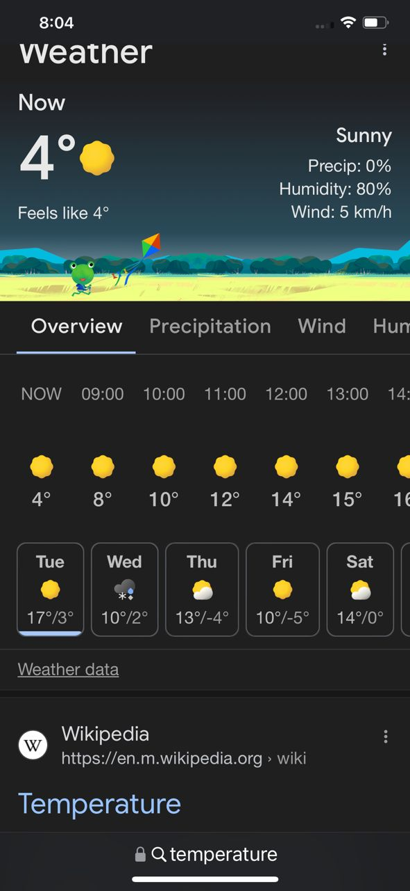
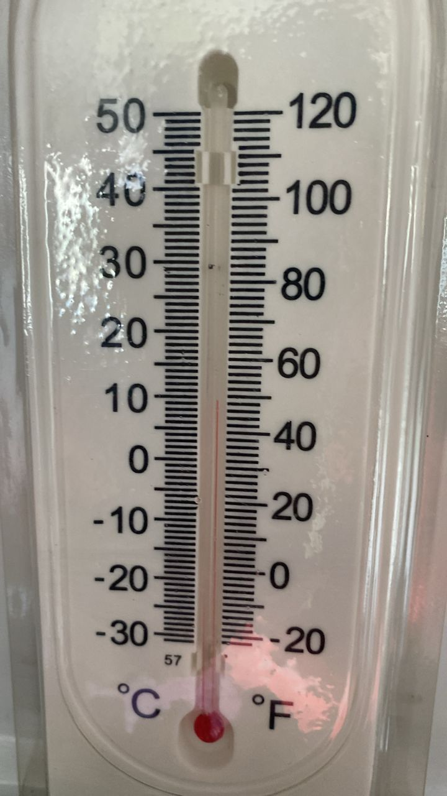
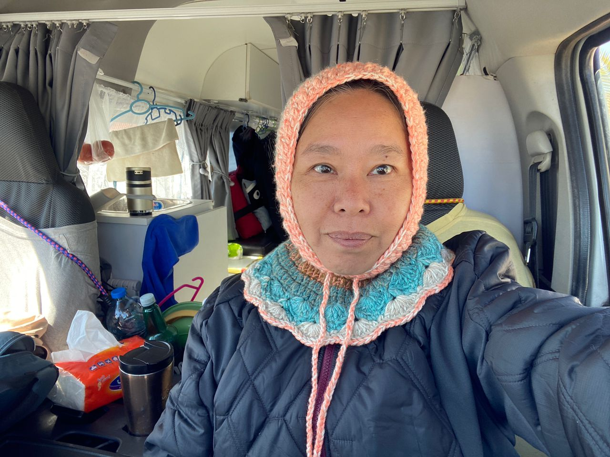

Real Story · 中文
从南部海边往北走，天气开始认真变冷。
26 February 2024，我继续从 Fasa / Shiraz 方向往北移动。 外面温度只有 4°C。 对一个来自 tropical country 的人来说，这已经不是普通凉爽，是身体会认真感受到的冷。
但是 Toyotaki 的 insulation 很争气。 通常车内可以比外面保持大约 5°C 的差距。 这不是豪华 camper 的 comfort，而是 long road survival 的小小胜利。


Camper Breakfast
Simple food, enough warmth.
Breakfast stayed simple: bread or wrap, coffee, and half-boiled eggs. On the road, especially in cold weather, simple food is not a compromise. It is rhythm: something warm, something easy, something that lets the day continue.
The Crochet Hood
Finally cold enough to wear it.
A colleague had made Tuzi a warm crochet hood before the journey. In southern Iran it was too warm to wear it, but on this cold road, the moment finally arrived.
This small handmade item became more than clothing. It was a piece of home, carried into a cold country road.

27 February
Aminabad petrol station: cold night.
On 27 February, Tuzi overnighted at Aminabad petrol station. The temperature and road mood made it clear that this was no longer the soft southern coast. The route toward Tehran had become a cold-road test.
First Snow
From a tropical country to a snowy road.
On the way to Tehran, Tuzi saw and touched snow for the first time on this route. For someone travelling from Malaysia in a converted Hiace campervan, this was more than weather.
The most encouraging moment came from family. Until this point, they finally confirmed two things: Tuzi was tough, and Toyotaki was good enough to travel from a tropical country into a snowy country. That compliment meant a lot.
English Memory Summary
A small cold-weather proof.
On 26–27 February 2024, Tuzi moved north through colder Iran. The outside temperature reached 4°C, but Toyotaki’s insulation helped keep the interior warmer. Breakfast remained simple, the handmade crochet hood finally became useful, and Aminabad petrol station became a cold overnight stop.
On the way toward Tehran, Tuzi encountered snow and shared the moment with family. Their response became a meaningful confirmation: the traveller was tough, and the campervan was capable.
Heart Statement
有些 compliment，不是夸你漂亮，而是终于承认：你真的走到了这里。
The cold road did not only test Toyotaki. It quietly proved that a tropical traveller could keep going.